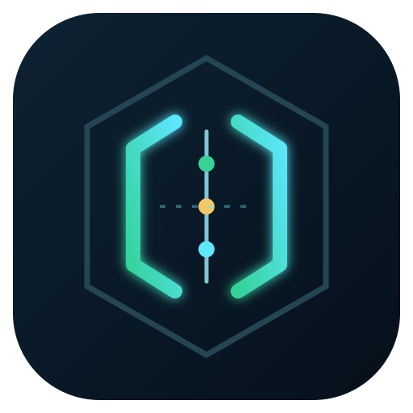

Market coverage
U.S.-listed common stocks enter with exchange, security type, price history, and liquidity context.
START BROAD
RigorGateRigorGate narrows a broad U.S. equity universe into a small, auditable research queue. It combines market regime, price structure, business quality, valuation, catalysts, evidence freshness, and explicit risk gates.
A ranking tells you where to look. An audit trail tells you why.
Each layer can narrow, pause, or reject a candidate. Missing critical evidence fails closed instead of being converted into false confidence.
U.S.-listed common stocks enter with exchange, security type, price history, and liquidity context.
START BROADMarket breadth, volatility, liquidity, and history gates remove structures the engine cannot underwrite.
FAIL CLOSEDTrend stage, momentum, relative strength, volume, and volatility surface technically relevant setups.
RANK, DO NOT PREDICTFinancial durability, accounting quality, valuation context, catalysts, and sector-aware checks test the thesis.
LOOK FOR CONTRADICTIONSA posture, hard-gate results, missing evidence, invalidation reference, and red-team case travel together.
HUMAN DECISION NEXTThe public demo shows the shape of the output using deterministic fictional securities. A live run uses configured market and filing providers.
Strong enough to begin full human underwriting. It is not an order.
A named confirmation or missing evidence blocks advancement.
A hard gate failed and the reason remains visible in the record.
Use three fictional cases to experience the final decision layer. Commit before seeing the posture, then inspect what advanced or failed.
Where should this case go next?
Every case carries posture, missing evidence, gates, invalidation, and a machine-readable observation ID.
{
"status": "waiting_for_your_decision",
"score_is_probability": false,
"order_created": false
}
Download the exact fictional replay record and inspect what the system knew, what it did not know, and why the gate held.
Choose the smallest path that fits you. A researcher can submit a decision-time counterexample without code, a first-time contributor can ship a bounded fix, and an experienced developer can harden the evidence layer.
$ make lab
$ make test
$ git checkout -b break-a-gate